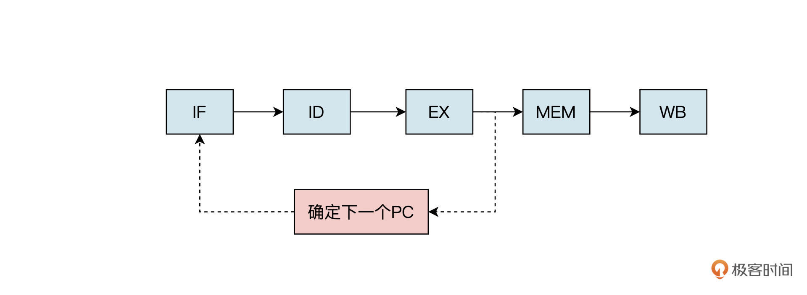

- 00 开篇词 练好基本功，优秀工程师成长第一步.md
- 01 CISC & RISC：从何而来，何至于此.md
- 02 RISC特性与发展：RISC-V凭什么成为“半导体行业的Linux”？.md
- 03 硬件语言筑基（一）：从硬件语言开启手写CPU之旅.md
- 04 硬件语言筑基（二）_ 代码是怎么生成具体电路的？.md
- 05 指令架构：RISC-V在CPU设计上到底有哪些优势？.md
- 06 手写CPU（一）：迷你CPU架构设计与取指令实现.md
- 07 手写CPU（二）：如何实现指令译码模块？.md
- 08 手写CPU（三）：如何实现指令执行模块？.md
- 09 手写CPU（四）：如何实现CPU流水线的访存阶段？.md
- 10 手写CPU（五）：CPU流水线的写回模块如何实现？.md
- 11 手写CPU（六）：如何让我们的CPU跑起来？.md
- 12 QEMU：支持RISC-V的QEMU如何构建？.md
- 13 小试牛刀：跑通RISC-V平台的Hello World程序.md
- 14 走进C语言：高级语言怎样抽象执行逻辑？.md
- 15 C与汇编：揭秘C语言编译器的“搬砖”日常.md
- 16 RISC-V指令精讲（一）：算术指令实现与调试.md
- 17 RISC-V指令精讲（二）：算术指令实现与调试.md
- 18 RISC-V指令精讲（三）：跳转指令实现与调试.md
- 19 RISC-V指令精讲（四）：跳转指令实现与调试.md
- 20 RISC-V指令精讲（五）：原子指令实现与调试.md
- 21 RISC-V指令精讲（六）：加载指令实现与调试.md
- 22 RISC-V指令精讲（七）：访存指令实现与调试.md
- 23 内存地址空间：程序中地址的三种产生方式.md
- 24 虚实结合：虚拟内存和物理内存.md
- 25 堆&栈：堆与栈的区别和应用.md
- 26 延迟分配：提高内存利用率的三种机制.md
- 27 应用内存管理：Linux的应用与内存管理.md
- 28 进程调度：应用为什么能并行执行？.md
- 29 应用间通信（一）：详解Linux进程IPC.md
- 30 应用间通信（二）：详解Linux进程IPC.md
- 31 外设通信：IO Cache与IO调度.md
- 32 IO管理：Linux如何管理多个外设？.md
- 33 lotop与lostat命令：聊聊命令背后的故事与工作原理.md
- 34 文件仓库：初识文件与文件系统.md
- 35 Linux文件系统（一）：Linux如何存放文件？.md
- 36 Linux文件系统（二）：Linux如何存放文件？.md
- 37 浏览器原理（一）：浏览器为什么要用多进程模型？.md
- 38 浏览器原理（二）：浏览器进程通信与网络渲染详解.md
- 39 源码解读：V8 执行 JS 代码的全过程.md
- 40 内功心法（一）：内核和后端通用的设计思想有哪些？.md
- 41 内功心法（二）：内核和后端通用的设计思想有哪些？.md
- 42 性能调优：性能调优工具eBPF和调优方法.md
- 先睹为快：迷你CPU项目效果演示.md
- 加餐01 云计算基础：自己动手搭建一款IAAS虚拟化平台.md
- 加餐02 学习攻略（一）：大数据&云计算，究竟怎么学？.md
- 加餐03 学习攻略（二）：大数据&云计算，究竟怎么学？.md
- 加餐04 谈谈容器云与和CaaS平台.md
- 加餐05 分布式微服务与智能SaaS.md
- 国庆策划01 知识挑战赛：检验一下学习成果吧！.md
- 国庆策划02 来自课代表的学习锦囊.md
- 国庆策划03 揭秘代码优化操作和栈保护机制.md
- 温故知新 思考题参考答案（一）.md
- 用户故事 我是怎样学习Verilog的？.md
- 结束语 心若有所向往，何惧道阻且长.md
10 手写CPU（五）：CPU流水线的写回模块如何实现？
你好，我是LMOS。
今天我们一起来完成迷你CPU的最后一个部分——写回相关模块的设计（课程代码在这里）。
简单回顾一下，上节课我们完成了CPU流水线的访存相关模块的设计。在设计访存模块之前，我们发现流水线中存在数据冒险的问题。为了解决这个问题，我们设计了数据前递模块。
但是我们采用的数据前递模块，只局限于解决算术操作和数据传输中的冒险问题。在CPU流水线中还可能存在结构冒险和控制冒险的问题，我们在进行流水线规划时，已经合理地避免了结构冒险。但是，控制冒险还可能出现，下面我们就来探讨一下流水线的控制冒险问题。
流水线控制冒险
还记得前面我们说过的条件分支指令吗？就是根据指令设置的数值比较结果，改变并控制跳转的方向，比如beq和bne指令。
假如在流水线取出分支指令后，紧跟着在下一个时钟周期就会取下一条指令。但是，流水线并不知道下一条指令应该从哪里取，因为它刚从存储器中取出分支指令，还不能确定上一条分支指令是否会发生跳转。
上面这种**流水线需要根据上一条指令的执行结果决定下一步行为的情况，就是流水线中的控制冒险。**这时候该怎么办呢？

控制冒险可以使用流水线停顿的方法解决，就是在取出分支指令后，流水线马上停下来，等到分支指令的结果出来，确定下一条指令从哪个地址取之后，流水线再继续。

如上图所示，每当遇到条件分支指令时，流水线就停顿以避免控制冒险。但是这种方法对性能的影响是很大的。因为条件分支指令要等到执行之后的访存阶段，才能决定分支跳转是否发生，这就相当于流水线停顿了2个时钟周期。我们MiniCPU只有五级流水线，就停顿了这么久，像intel 的酷睿 i7处理器流水线，它的深度有十几级，如果也用停顿的方法，那延时损失就更大了。
既然阻塞流水线直到分支指令执行完成的方法非常耗时，浪费了太多流水线的时钟周期。那么，有没有一种方法既能解决控制冒险问题，又不影响流水线的性能呢？
很遗憾，答案是否定的。到目前为止，我们还没有找到根本性的解决控制冒险问题的方法。
但是，这并不代表我们没有办法去优化它，我们可以采用分支预测的方法提升分支阻塞的效率。
具体思路是这样的，当每次遇到条件分支指令时，预测分支会发生跳转，直接在分支指令的下一条取跳转后相应地址的指令。如果分支发生跳转的概率是50%，那么这种优化方式就可以减少一半由控制冒险带来的性能损失。
其实我们[第六节课]取指阶段设计的预读取模块（if_pre.v），实现的就是这个功能，相关代码如下：
wire is_bxx = (instr[6:0] == `OPCODE_BRANCH); //条件挑转指令的操作码
wire is_jal = (instr[6:0] == `OPCODE_JAL) ; //无条件跳转指令的操作码
//B型指令的立即数拼接
wire [31:0] bimm = {{20{instr[31]}}, instr[7], instr[30:25], instr[11:8], 1'b0};
//J型指令的立即数拼接
wire [31:0] jimm = {{12{instr[31]}}, instr[19:12], instr[20], instr[30:21], 1'b0};
//指令地址的偏移量
wire [31:0] adder = is_jal ? jimm : (is_bxx & bimm[31]) ? bimm : 4;
assign pre_pc = pc + adder;
看到这你可能还有疑问，如果条件分支不发生跳转的话又会怎么样呢？这种情况下，已经被读取和译码的指令就会被丢弃，流水线继续从不分支的地址取指令。
要想丢弃指令也不难，只需要把流水线中的控制信号和数据清“0”即可，也就是当预测失败的分支指令执行之后，到达访存阶段时，需要将流水线中处于取指、译码和执行阶段的指令清除。
我先展示一下控制冒险模块的整体代码，之后再详细解读。代码如下所示：
module hazard (
input [4:0] rs1,
input [4:0] rs2,
input alu_result_0,
input [1:0] id_ex_jump,
input id_ex_branch,
input id_ex_imm_31,
input id_ex_memRead,
input id_ex_memWrite,
input [4:0] id_ex_rd,
input [1:0] ex_mem_maskMode,
input ex_mem_memWrite,
output reg pcFromTaken,
output reg pcStall,
output reg IF_ID_stall,
output reg ID_EX_stall,
output reg ID_EX_flush,
output reg EX_MEM_flush,
output reg IF_ID_flush
);
wire branch_do = ((alu_result_0 & ~id_ex_imm_31) | (~alu_result_0 & id_ex_imm_31));
wire ex_mem_taken = id_ex_jump[0] | (id_ex_branch & branch_do);
wire id_ex_memAccess = id_ex_memRead | id_ex_memWrite;
wire ex_mem_need_stall = ex_mem_memWrite & (ex_mem_maskMode == 2'h0 | ex_mem_maskMode == 2'h1);
always @(*) begin
if(id_ex_memAccess && ex_mem_need_stall) begin
pcFromTaken <= 0;
pcStall <= 1;
IF_ID_stall <= 1;
IF_ID_flush <= 0;
ID_EX_stall <= 1;
ID_EX_flush <= 0;
EX_MEM_flush <= 1;
end
else if(ex_mem_taken) begin
pcFromTaken <= 1;
pcStall <= 0;
IF_ID_flush <= 1;
ID_EX_flush <= 1;
EX_MEM_flush <= 0;
end
else if(id_ex_memRead & (id_ex_rd == rs1 || id_ex_rd == rs2)) begin
pcFromTaken <= 0;
pcStall <= 1;
IF_ID_stall <= 1;
ID_EX_flush <= 1;
end
else begin
pcFromTaken <= 0;
pcStall <= 0;
IF_ID_stall <= 0;
ID_EX_stall <= 0;
ID_EX_flush <= 0;
EX_MEM_flush <= 0;
IF_ID_flush <= 0;
end
end
endmodule
首先我们来看看在控制冒险模块中，内部产生的几个信号都起到了怎样的作用。- branch_do 信号就是条件分支指令的条件比较结果，由ALU运算结果和立即数的最高位（符合位）通过“与”操作得到；ex_mem_taken是确认分支指令跳转的信号，由无条件跳转（jump）“或”条件分支指令（branch）产生。
id_ex_memAccess是存储器的选通信号，当对存储器的“读”或者“写”控制信号有效时产生；ex_mem_need_stall信号表示流水线需要停顿，当执行sb或者sh指令时就会出现这样的情况。
然后，再来看看我们这个模块要输出的几个信号。
wire branch_do = ((alu_result_0 & ~id_ex_imm_31) | (~alu_result_0 & id_ex_imm_31));
wire ex_mem_taken = id_ex_jump[0] | (id_ex_branch & branch_do);
wire id_ex_memAccess = id_ex_memRead | id_ex_memWrite;
wire ex_mem_need_stall = ex_mem_memWrite & (ex_mem_maskMode == 2'h0 | ex_mem_maskMode == 2'h1);
pcFromTaken是分支指令执行之后，判断和分支预测方向是否一致的信号。pcStall是控制程序计数器停止的信号，如果程序计数器停止，那么流水线将不会读取新的指令。IF_ID_stall是流水线中从取指到译码的阶段的停止信号。ID_EX_stall是流水线从译码到执行阶段的停止信号。
此外，当流水线需要冲刷时，就会产生取指、译码、执行、访存阶段的清零信号，分别对应着ID_EX_flush、EX_MEM_flush和IF_ID_flush信号。
output reg pcFromTaken, //分支指令执行结果，判断是否与预测方向一样
output reg pcStall, //程序计数器停止信号
output reg IF_ID_stall, //流水线IF_ID段停止信号
output reg ID_EX_stall, //流水线ID_EX段停止信号
output reg ID_EX_flush, //流水线ID_EX段清零信号
output reg EX_MEM_flush, //流水线EX_MEM段清零信号
output reg IF_ID_flush //流水线IF_ID段清零信号
什么情况下才会产生上面的控制信号呢？一共有三种情况，我这就带你依次分析一下。- **第一种情况是解决数据相关性问题。**数据相关指的是指令之间存在的依赖关系。当两条指令之间存在相关关系时，它们就不能在流水线中重叠执行。
例如，前一条指令是访存指令Store，后一条也是Load或者Store指令，因为我们采用的是同步RAM，需要先读出再写入，占用两个时钟周期，所以这时要把之后的指令停一个时钟周期。
if(ID_EX_memAccess && EX_MEM_need_stall) begin
pcFromTaken <= 0;
pcStall <= 1;
IF_ID_stall <= 1;
IF_ID_flush <= 0;
ID_EX_stall <= 1;
ID_EX_flush <= 0;
EX_MEM_flush <= 1;
end
**第二种情况是分支预测失败的问题，**当分支指令执行之后，如果发现分支跳转的方向与预测方向不一致。这时就需要冲刷流水线，清除处于取指、译码阶段的指令数据，更新PC值。
// 分支预测失败，需要冲刷流水线，更新pc值
else if(EX_MEM_taken) begin
pcFromTaken <= 1;
pcStall <= 0;
IF_ID_flush <= 1;
ID_EX_flush <= 1;
EX_MEM_flush <= 0;
end
第三种情况就是解决[上一节课]提到的数据冒险问题。当前一条指令是 Load，后一条指令的源寄存器 rs1和rs2依赖于前一条从存储器中读出来的值，需要把 Load 指令之后的指令停顿一个时钟周期，而且还要冲刷ID _EX阶段的指令数据。
else if(ID_EX_memRead & (ID_EX_rd == rs1 || ID_EX_rd == rs2)) begin
pcFromTaken <= 0;
pcStall <= 1;
IF_ID_stall <= 1;
ID_EX_flush <= 1;
end
解决了流水线的冒险问题，我们才能确保指令经过流水线执行后，得到的结果是正确的，这时候才能把执行结果写回到寄存器。接下来，让我们来继续完成写回阶段的模块设计。
写回控制模块设计
现在我们来到了流水线的最后一级——结果写回。先来看看写回控制模块，这个模块实现起来就非常简单了，它的作用就是选择存储器读取回来的数据作为写回的结果，还是选择流水线执行运算之后产生的数据作为写回结果。
具体代码如下：
module mem_wb_ctrl(
input clk,
input reset,
input in_wb_ctrl_toReg,
input in_wb_ctrl_regWrite,
output data_wb_ctrl_toReg,
output data_wb_ctrl_regWrite
);
reg reg_wb_ctrl_toReg;
reg reg_wb_ctrl_regWrite;
assign data_wb_ctrl_toReg = reg_wb_ctrl_toReg;
assign data_wb_ctrl_regWrite = reg_wb_ctrl_regWrite;
always @(posedge clk or posedge reset) begin
if (reset) begin
reg_wb_ctrl_toReg <= 1'h0;
end else begin
reg_wb_ctrl_toReg <= in_wb_ctrl_toReg;
end
end
always @(posedge clk or posedge reset) begin
if (reset) begin
reg_wb_ctrl_regWrite <= 1'h0;
end else begin
reg_wb_ctrl_regWrite <= in_wb_ctrl_regWrite;
end
end
endmodule
代码里有两个重要的信号需要你留意。一个是写回寄存器的数据选择信号wb_ctrl_toReg，当这个信号为“1”时，选择从存储器读取的数值作为写回数据，否则把流水线的运算结果作为写回数据。另一个是寄存器的写控制信号wb_ctrl_regWrite，当这个信号为“1”时，开始往目标寄存器写回指令执行的结果。
写回数据通路模块设计
和写回的控制模块一样，流水线的最后一级的写回数据通路上的信号也变得比较少了。
写回数据通路模块产生的信号主要包括写回目标寄存器的地址reg_WAddr，流水线执行运算后的结果数据result，从存储器读取的数据readData。
写回数据通路的模块代码如下：
module mem_wb(
input clk,
input reset,
input [4:0] in_regWAddr,
input [31:0] in_result,
input [31:0] in_readData,
input [31:0] in_pc,
output [4:0] data_regWAddr,
output [31:0] data_result,
output [31:0] data_readData,
output [31:0] data_pc
);
reg [4:0] reg_regWAddr;
reg [31:0] reg_result;
reg [31:0] reg_readData;
reg [31:0] reg_pc;
always @(posedge clk or posedge reset) begin
if (reset) begin
reg_regWAddr <= 5'h0;
end else begin
reg_regWAddr <= in_regWAddr;
end
end
always @(posedge clk or posedge reset) begin
if (reset) begin
reg_result <= 32'h0;
end else begin
reg_result <= in_result;
end
end
always @(posedge clk or posedge reset) begin
if (reset) begin
reg_readData <= 32'h0;
end else begin
reg_readData <= in_readData;
end
end
always @(posedge clk or posedge reset) begin
if (reset) begin
reg_pc <= 32'h0;
end else begin
reg_pc <= in_pc;
end
end
assign data_regWAddr = reg_regWAddr;
assign data_result = reg_result;
assign data_readData = reg_readData;
assign data_pc = reg_pc;
endmodule
仔细观察代码，你是否发现和流水线的前面几级的数据通路模块相比，少了两个控制信号呢？- 是的，写回阶段的模块没有了流水线的停止控制信号stall和流水线的冲刷控制信号flush。这是因为写回阶段的数据经过了数据冒险和控制冒险模块的处理，已经可以确保流水线产生的结果无误了，所以写回阶段的数据不受停止信号stall和清零信号flush的控制。
到这里，我们要设计的迷你CPU的五级流水线就基本完成啦。
重点回顾
最后我给你做个总结吧。
这节课我们先分析了流水线中存在的控制冒险问题，也就是当流水线中出现条件分支指令时，下一条指令还不确定从哪里取的问题。最容易想到的解决方案，就是在取出分支指令后，流水线马上停下来，等到分支指令的结果出来，确定下一条指令从哪个地址获取之后，流水线再继续。但是，这里流水线停顿的方式缺点很明显，它会带来很多CPU的性能损失。
于是，我们采用了分支预测的方法，预测每一条分支指令都会发生跳转，直接在分支指令的下一条取跳转后相应地址的指令。如果分支发生跳转的概率是50%，那么这种优化方式就可以减少一半由控制冒险带来的性能损失。
最后，根据整个流水线执行后的数据，我们完成了流水线的最后一级，也就是写回控制模块和数据通路模块的设计。写回控制模块要么选择存储器读取回来的数据作为写回结果，要么选择流水线执行运算之后产生的数据作为写回结果。数据通路模块则包含了写回目标寄存器的地址、ALU的运算结果以及访存阶段读存储器得到的数据。

到这里，我们终于把CPU的五级流水线的最后一级设计完成了，这代表基于指令集RV32I的迷你CPU核心代码设计已经完成。很快就可以让它跑程序了，你是不是很期待呢？下一节课我们就可以看到效果了！
思考题
除了流水线停顿和分支预测方法，是否还有其他解决控制冒险问题的办法？
欢迎你在留言区跟我交流互动，或者记录下你的思考与收获。如果觉得这节课还不错，别忘了分享给身边的朋友，我们一起来手写CPU！
© 2019 - 2023 Liangliang Lee. Powered by Vert.x and hexo-theme-book.